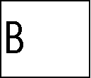

| HOME >> Tutorials >> Tutorial 13: Points |
Introduction:
In this tutorial, we will learn how to draw points on the graph screen. Points are the first step to making pictures on the graph screen. The difference between the point commands and other commands like Output( or Text( is that the point commands use the (x,y) coordinate system, while the other commands use the row,column method.
New Commands:
| Pt-On( | Draws a point at coordinate (x,y) with a specified mark |
| Pt-Off( | Erases a point at coordinate (x,y) with a specified mark |
| Pt-Change( | Toggles or reverses a point at coordinate (x,y) |
New Variables:
| Xmin | Minimum value of the x-axis in the viewing window |
| Xmax | Maximum value of the x-axis in the viewing window |
| Ymin | Minimum value of the y-axis in the viewing window |
| Ymax | Maximum value of the y-axis in the viewing window |
| Pt-On(x,y[,mark]) | 0 |
| Pt-Off(x,y[,mark]) | 94 |
| Pt-Off(x,y) | 0 |
| -62 |
The Codes:
The first set of code will use Pt-On( to make a line. The second code will use Pt-On( to make a big "B" on the screen. The next code will show how to delete part of a line using Pt-Off(. The last code is just something cool using Pt-Change(.
| : | For AShell, SOS, and TI-Explorer |
| AxesOff | Turns the graph axes off |
| FnOff | Deselects all the Y= functions |
| 0 |
Stores Xmin as 0 |
| 94 |
Stores Xmax as 94 |
| 0 |
Stores Ymax as 0 |
| -62 |
Stores Ymin as -62 |
| ClrDraw | Clears the graph screen of all drawings |
| For(X,37,57 | Draws a horizontal line that is 20 points |
| Pt-On(X,-31 | long in about the middle of the screen |
| End | End the For loop |
| Text(25,38,"HELLO | Writes "HELLO" centered above the line |
This code shows you two things: how to draw a line using Pt-On( and how to underline text. That's why it's so important to set those window variables because it makes it a whole lot easier to underline the text. I didn't add an AxesOn at the end of the code because it would have turned the axes on over the underlined text. I would have to add a pause and then AxesOn and that's too much trouble. I just advise that you add an AxesOn at the end of your games or programs. Although using Pt-On( in a For statement works for drawing lines, there's a faster and better way. You can use the command Line(. If you want to jump ahead to see how to use Line, go to Tutorial 15. Next, we'll draw a big "B."
| : | For AShell, SOS, and TI-Explorer |
| AxesOff | Turns the graph axes off |
| FnOff | Deselects all the Y= functions |
| 0 |
Stores Xmin as 0 |
| 94 |
Stores Xmax as 94 |
| 0 |
Stores Ymax as 0 |
| -62 |
Stores Ymin as -62 |
| ClrDraw | Clears the graph screen of all drawings |
| For(X,-17,-45,-1 | Draws a vertical line that is 28 points long |
| Pt-On(15,X | on the left side of the screen |
| End | End the For loop |
| For(X,16,28 | Draws a horizontal line that is 12 points long |
| Pt-On(X,-17 | in about the middle of the screen |
| End | End the For statement |
| For(X,-18,-30,-1 | Draws a vertical line that is 12 points long |
| Pt-On(29,X | on the left side of the screen |
| End | End the For loop |
| For(X,28,16,-1 | Draws a horizontal line that is 12 points long |
| Pt-On(X,-31 | in about the middle of the screen |
| End | End the For loop |
| For(X,-32,-45,-1 | Draws a vertical line that is 13 points long |
| Pt-On(29,X | on the left side of the screen |
| End | End the For loop |
| For(X,28,16,-1 | Draws a horizontal line that is 12 points long |
| Pt-On(X,-45 | in about the middle of the screen |
| End | End the For loop |
The output won't look exactly like this
I could have combined those three For loops that drew the horizontal line that was 12 points long into one For loop. I decided not to because I wanted the program to give the effect that the calculator was actually drawing the "B." It kind of looks like that right? The next code will erase part of a line. I'll use the same code for the line we drew before.
| : | For AShell, SOS, and TI-Explorer |
| AxesOff | Turns the graph axes off |
| FnOff | Deselects all the Y= functions |
| 0 |
Stores Xmin as 0 |
| 94 |
Stores Xmax as 94 |
| 0 |
Stores Ymax as 0 |
| -62 |
Stores Ymin as -62 |
| ClrDraw | Clears the graph screen of all drawings |
| For(X,37,57 | Draws a horizontal line that is 20 points |
| Pt-On(X,-31 | long in about the middle of the screen |
| End | End the For loop |
| For(X,42,52 | |
| Pt-Off(X,-31 | Erases 10 points of the horizontal line |
| End | End the For loop |

Just as before there's a better way to do this, but I just wanted to show you how Pt-Off( works. You can use the Line( command to draw and erase part of a line. The last code is just a cool little game I just thought up to show how Pt-Change( works.
| : | For AShell, SOS, and TI-Explorer |
| AxesOff | Turns the graph axes off |
| FnOff | Deselects all the Y= functions |
| 0 |
Stores Xmin as 0 |
| 94 |
Stores Xmax as 94 |
| 0 |
Stores Ymax as 0 |
| -62 |
Stores Ymin as -62 |
| ClrDraw | Clears the graph screen of all drawings |
| Pt-On(5,-31 | Draws a point at (5,-31) |
| Pt-On(65,-31 | Draws a point at (65,-31) |
| Lbl 1 | |
| Pt-Change(35,-31 | Toggles a point at (35,-31) |
| Pt-Change(5,-31 | Toggles the point at (5,-31) |
| Pt-Change(65,-31 | Toggles a point at (65,-31) |
| For(X,1,100) | This line and the next line are used to |
| End | delay the program for about a second |
| Goto 1 | Goto Label 1 |
Repeatedly...
and
You might not be able to see it well, but there should be two flashing points on the screen. The program just loops back around continuosly, so the Pt-Change( toggles it on and then toggles it off. Now you know how to make points flash. If you don't know this yet, you can stop the program by pressing  and then
and then  .
.
Version 3.0 Update:
So, now you know how to underline text, but you still want something more. How can you make a selection of text stand out from the rest? How about highlighting it? Yes, you can highlight text on your calculator. Actually, it isn't really highlighting, but more like inverting colors. However, it does give the effect of highlighting and makes the text stand out. Here's the code:
| : | For AShell, SOS, and TI-Explorer |
| AxesOff | Turns the graph axes off |
| FnOff | Deselects all the Y= functions |
| 0 |
Stores Xmin as 0 |
| 94 |
Stores Xmax as 94 |
| 0 |
Stores Ymax as 0 |
| -62 |
Stores Ymin as -62 |
| ClrDraw | Clears the graph screen of all drawings |
| Text(29,23,"HIGHLIGHTED!! | Writes "HIGHLIGHTED!!" in the middle of the screen |
| For(X,22,70 | |
| For(Y,-35,-29 | |
| Pt-Change(X,Y | Toggles all the points in a rectangle around the text |
| End | |
| End |
There's not too much to explain. The only explanation that you might need is with the nested For loops. What happens is that X initially becomes 22 and Y is -35. Then, it toggles the point at (X,Y) or in this case (22,-35). Next, the calculator loops back to the inner For loop, makes Y equal to -34, and toggles the point at (22,-34). This continues until the final point, (22,-29), is toggled. Since, the inner For loop is finished, the calculator loops back to the outer one and makes X equal to 23. Then the process is repeated all over again. So what basically happens is that everything that's white in the area is turned to black, and everything that was black is turned to white. Thus, we have the effect of highlighting.
Conclusion:
Well that about wraps up this tutorial. I hope I've given you enough information for you to be able to use these three commands in your programs. I feel they are pretty easy to understand. The next tutorial is very similar to this one except we'll be dealing with pixels instead of points.
If you do not understand a particular part in this lesson, have suggestions, or find any problems please contact me.
 |
|
| Tutorial 12 | Tutorial 14 |